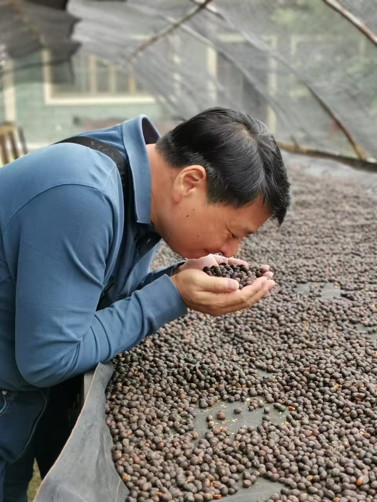
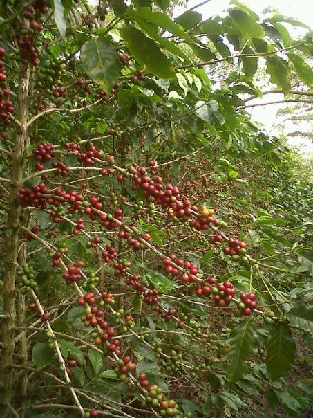

HONDURAS · CENTROAMÉRICACopán
科潘，石頭留下的廣場
在宏都拉斯西部，科潘瑪雅遺址的古城與公共廣場，仍看得出城市在不同時期擴建的痕跡。看這片土地，除了記住它出產什麼，也可以記住曾在這裡相聚的人。
讀 UNESCO 的科潘遺址介紹 ↗我們想做最熱情的咖啡品牌。
先一起看看莊園裡的這一幕，再來喝杯咖啡。從曬床邊的一捧果實，到杯裡的一縷花香，中間有許多人的手。

En la finca照片裡，老闆彎下腰，將雙手捧起的咖啡果實湊近鼻尖。這是他親自走進莊園時留下的畫面。平常寫在豆單上的「日曬」只有兩個字；站在曬床旁，那兩個字卻鋪滿了眼前。
回到杯子這一端，在台灣是獨樂思，在廈門是龍津壕。兩地的豆單裡都有「琥珀花園」：第一次喝，可以先試著找找白花香；也有人先想到剝開柑橘時指尖的氣味。我們把風味寫下來，是為了讓第一次坐到桌邊的人，也有一句話可以接著聊。
核心理念
寫下「宏都拉斯」時，我們也想替種咖啡的人留一點篇幅。果實怎麼成熟、怎麼乾燥，都是人每天在田裡做的選擇。
說一支豆子有花香，指的是喝起來的聯想。把產地、處理法和風味分開寫清楚，你就能按自己的口味選豆。
不必先懂「藝伎」或「水洗」。告訴我們，你今天想喝清爽一點，還是濃郁一點？這就足夠開始聊了。

照片裡，同一根枝條上的果實有紅有綠。杯子裡看不見的，是人在田裡辨認成熟度的眼光。想靠近這樣的日常，可以從馬爾卡拉的 APROCOMSA 開始：這是由當地咖啡生產者組成的協會，他們用自己的語言介紹共同經營咖啡的理念。
想再走遠一點，宏都拉斯咖啡研究所整理了一條「咖啡之路」，從六大產區的農人、育苗與研究，一路讀到烘焙和咖啡館。
沿著地圖從中美洲走向南美洲，有兩處值得停下來看：一座以石頭記錄歷史的城，一片由一代代農人種出來的風景。
在宏都拉斯西部，科潘瑪雅遺址的古城與公共廣場，仍看得出城市在不同時期擴建的痕跡。看這片土地，除了記住它出產什麼，也可以記住曾在這裡相聚的人。
讀 UNESCO 的科潘遺址介紹 ↗在哥倫比亞西部的咖啡文化景觀，農人把陡坡分成小塊耕地，聚落落在較平坦的山脊。從田裡抬頭就是家屋：這裡的咖啡文化，也寫在一條條回家的山路上。
讀 UNESCO 的咖啡文化景觀介紹 ↗翻牌找出三對相同的風味圖案，就能抽一張來自 DURAS 豆單的祝福卡。看看今天是哪一支咖啡，捎來一句西班牙語的好話。